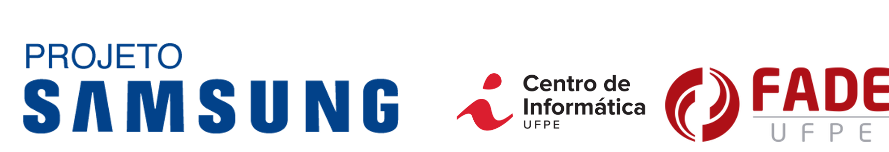

VGG16 + LSTM

VGG16+LSTM This deep architecture is composed by encoder and decoder. Commonly, the encoder utilizes Convolution Neural Network (CNN) to extract features and the decoder uses some variation of Recurrent Neural Networks (RNN) for sequence word generation.
|
Effficient + Transformer

Effficient + Transformer In this architecture is used EfficientNet to extract the features from images, and transformers to encode the features and decode the text. The objective of EfficientNet is to increase the scalability of the net based on the input, i.e., the number of layers and filters depends on the size of the image to better extract features of the image..
|
Clip + GPT-2

CLIP+GPT2 used pix2pix to create the very compelling music video linked above, in which common household items, like a powercord, are moved around in a pantomine of crashing waves and blooming flowers. Then a pix2pix-based model translates the pantomine into renderings of the imagined objects.
|
Evaluation
Qualitative Results

| Portuguese | English |
- Um gato laranja está dormindo em um teclado.
- Um close-up de um gato sentado ao lado do teclado.
- Um gato dormindo com é ouvir descansando em um teclado.
- Um gato com a cabeça apoiada em um teclado.
|
- An orange cat is sleeping on a keyboard.
- A close-up of a cat sitting next to the keyboard.
- A sleeping cat is hear resting on a keyboard.
- A cat with its head resting on a keyboard.
|
Quantitative Results

|
In this work we use metrics BLEU 1, 2, 3 and 4 for quantitatie analysis, the results is presented in I. The CLIP + GPT2 architectures presents the best result in all cases, even showing a 64.56% of improvement. The VGG16+LSTM show the worst results in all cases. This can be explained by that the transformers model shows a superior performance in comparison with LSTM
|
|
Experiments
Here we show comprehensive results from each experiment in our paper. Please see the paper for details on these experiments.
People have used our code for many creative applications, often posted on twitter with the hashtag #portuguese-image-captioning.
Recent Related Work
M. Z. Hossain, F. Sohel, M. F. Shiratuddin, and H. Laga, A comprehensive survey of deep learning for image captioning, ACM Computing Surveys (CSUR), vol. 51, pp. 1 – 36, 2019.
M. Bartosiewicz, I. Krupinska, M. Bany, A. Konieczna, M. Ostrowski, M. Zalewski, and M. Iwanowski, Generating image captions in polish experimental study, in 2021 14th International Conference on Human System Interaction (HSI), pp. 1–6, 2021.
G. O. dos Santos, E. L. Colombini, and S. Avila, pracegover: A large dataset for image captioning in portuguese, Data, vol. 7, no. 2, 2022.
D. C. Caterina Masotti and R. Basili, Deep learning for automatic imagecaptioning in poor training conditions, in Emerging Topics at the Fouth
Italian Conference on Computational Linguistics, 2018.
C. Masotti, D. Croce, and R. Basili, Deep learning for automatic image captioning in poor training conditions, IJCoL. Italian Journal of Computational Linguistics, vol. 4, no. 4-1, pp. 43-55, 2018.
A. Wroblewska, Polish corpus of annotated descriptions of images,in Proceedings of the Eleventh International Conference on Language Resources and Evaluation (LREC 2018), (Miyazaki, Japan), European Language Resources Association (ELRA), May 2018.
S. K. Mishra, R. Dhir, S. Saha, P. Bhattacharyya, and A. K. Singh,Image captioning in hindi language using transformer networks,Computers Electrical Engineering, vol. 92, p. 107114, 2021.
H. Wang, Y. Zhang, and X. Yu, An overview of image caption generation methods, Computational intelligence and neuroscience, vol. 2020,
2020.
M. Tan and Q. V. Le, Efficientnet: Rethinking model scaling for convolutional neural networks, CoRR, vol. abs/1905.11946, 2019.
A. Vaswani, N. Shazeer, N. Parmar, J. Uszkoreit, L. Jones, A. N. Gomez, L. Kaiser, and I. Polosukhin, Attention is all you need, CoRR, vol. abs/1706.03762, 2017.
R. Mokady, A. Hertz, and A. H. Bermano, Clipcap: Clip prefix forimage captioning, 2021.
A. Radford, J. Wu, R. Child, D. Luan, D. Amodei, and I. Sutskever,Language models are unsupervised multitask learners,2018.
|
Acknowledgements
We thank João Paulo, Thiago Vinuto, and Nickson Arraes for helpful discussions.
Thanks to authors of works shared datasets and code to replication.
This work was supported in part by UFPE via Cin, Samsung, SiDi, FADE.

|
| | |
 [GitHub]
[GitHub]


{kind=link}